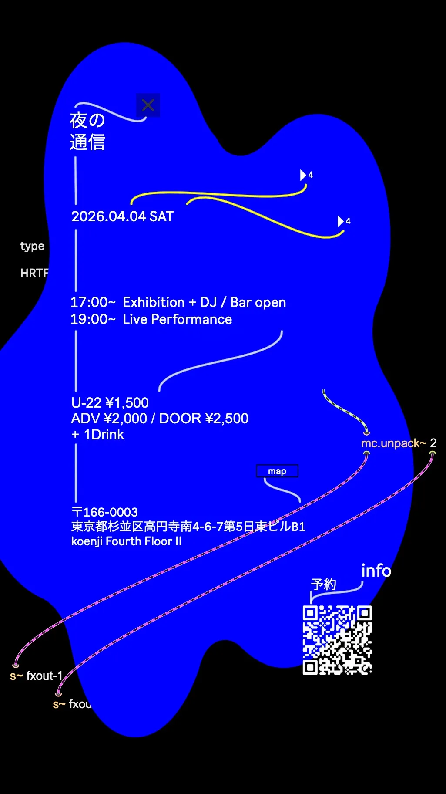
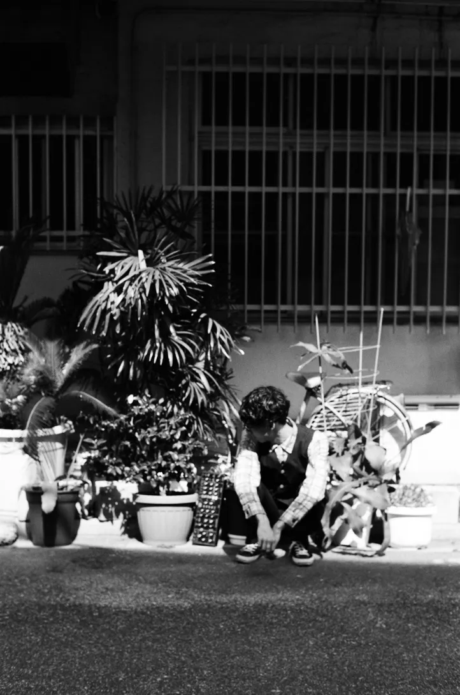
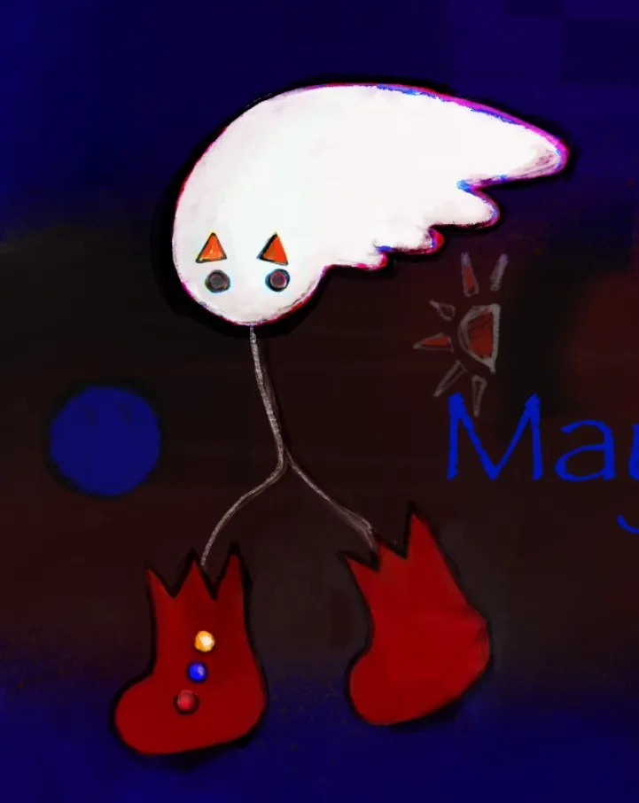
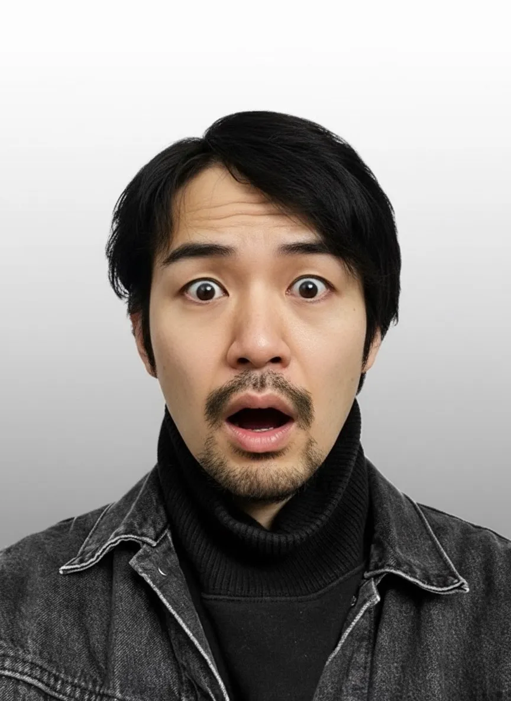
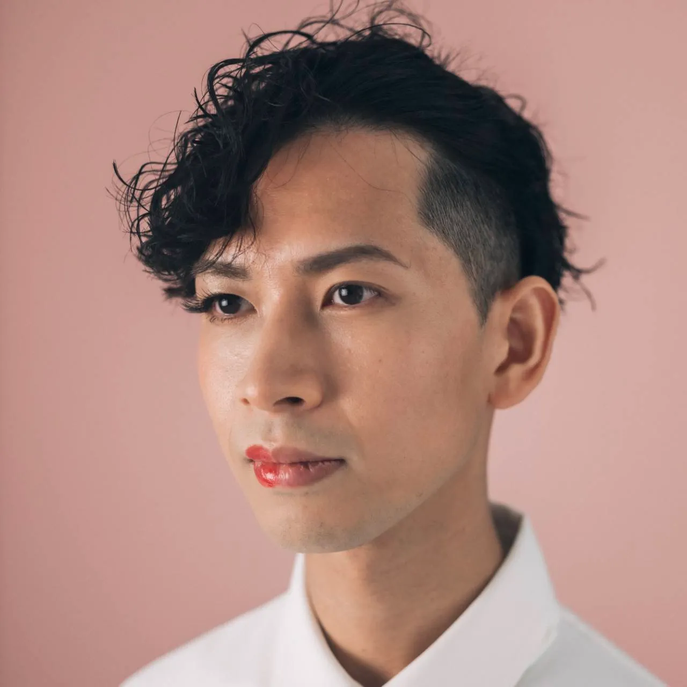
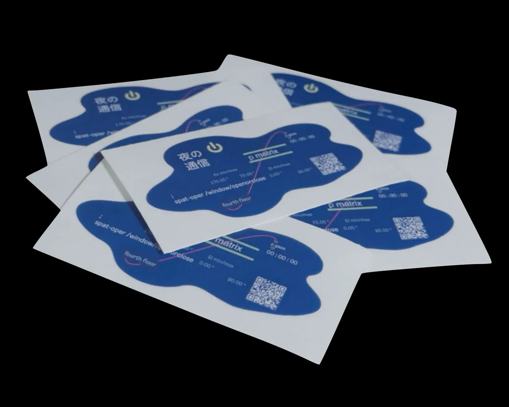

カシューナッツ軌道をただよう
夜の通信
2026.04.04 (Sat) / Koenji Fourth Floor II

夜の通信は、出演者それぞれの実践を持ち寄り、即興や実験を含むかたちで空間を構成する融合型イベントです。様々なシグナルが交差・応答し、フォーマットを越境する夜をぜひ。
LINEUP
DJ
iwa.maxpat
宮本康

Exhibition
青木駿

作曲家。
石川県出身。
自身の演奏による即興表現、作編曲活動を行う。2018年度・武生国際音楽祭作曲奨学生。
様々なアーティストと交流する中で、音が持つ可能性を探求している。
青松茉矢

自称宇宙芸術家。イギリスで美術を学んだ後、現在は東京を拠点に美学の研究・制作を行う。
浅野雄大

フランス思想をバックグラウンドに美学や芸術に関する研究を行いながら、エッセイ風のテクストを執筆している。
「彼女は生体活動のための身体構造と代謝システム維持しながら、IT系労働者として右手のパソコンで商品の在庫管理のシステムを作り、同時に左手のタブレットで絶え間なく押し寄せる敵に対処するキャラクター配置のシステムを作る。生存、労働、遊戯の全ての面において彼女はシステムであり、かつシステムを作る」
井上大輔
Live Performance
日下七海
中西優

サックス奏者として、数多くの舞台に立つ。「今を音にする」ための即興演奏を軸に活動している。
作曲家、CM音楽プロデューサーの顔も持ち、様々な媒体に幅を広げる。公演企画では、「unison」、「机の上のりんご」など。
nagomi koyama
東山一二三

福島県出身。
コンピュータを用いた即興演奏やパフォーマンス、音響作品、サウンドインスタレーションを中心に活動。
無機的な手法と有機的な感覚のあわいのなかで、音の引力や気配を探っている。
渡辺泰司

熊本県出身。
自身のベースに異なる踊りや質感を取り込みながら、ジャンルの枠を越えた新たな「在り方」を模索する。
都内および地方にて、自主企画・単独公演・MV出演など多岐に渡る活動を展開。
ダンサー・川村美紀子とのユニット《異路派 -iroha-》では、路上を舞台に活動を行う。
自身にしかできない視覚表現の新たな地平を切り開くことを目指す。その踊りは、言葉ではなく、身体の沈黙と時間の深さによって語られると考える。
Contributors
塙正貴

サウンドアーティスト / サックス奏者 / 作曲家 / 画家 /etc.
エアノイズを強調した独自の音色を持つアルトサックスを軸に、無音・音・音楽のあいだを自在に往還する表現を追求し、時間や空間と融合する作品やパフォーマンスを国内外で発表している。
活動領域は音楽にとどまらず、絵画や写真など多様なメディアへと拡張し、領域を越えた創作を展開している。
2023年、CADENZA(by T-Toc Records)より1stアルバム「Silence」をリリースしメジャーデビュー。
近年の主な活動として、アクリル画の個展「カフェの絵」や、サウンドインスタレーション「カフェの音楽」を発表。
また、Alto Saxophone Solo Exhibitionとして「現時点を基準とした順行と逆行」「アルトサクソフォンのノイズと空間の音」「認知上の境界線」などを開催。
さらに、Christian Soleil 著「Masaki Hanawa, the other name for delicacy: biography」の刊行にあわせ、フランス国内での公演も実施し、国際的な活動の幅を広げている。
富永宗汰
and more
TIME TABLE
17:00 — Exhibition + DJ / Bar open
19:00 — Live Performance
TICKET
U-22：1,500円
前売：2,000円／当日：2,500円
＋1ドリンク（別途）
VENUE
MERCH

夜の通信ステッカー
￥500
その他 会場内物販あり